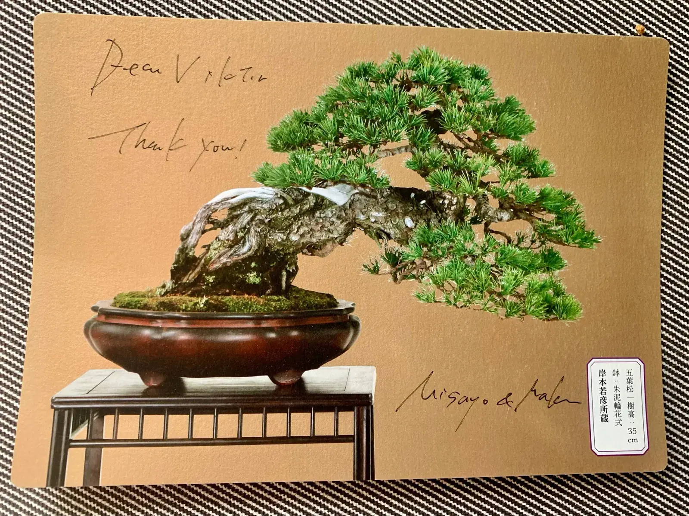

The soil decides: Akadama and roots.

A tree lives from its foundation. Water, air, pH and root health decide whether the crown can react. If the soil is too dense, too wet or too dry, the visible problem often starts below the surface.
Viktor checks the tree as a system: crown, trunk, roots, water and location. A cut can correct a lot, but it cannot replace a healthy foundation.